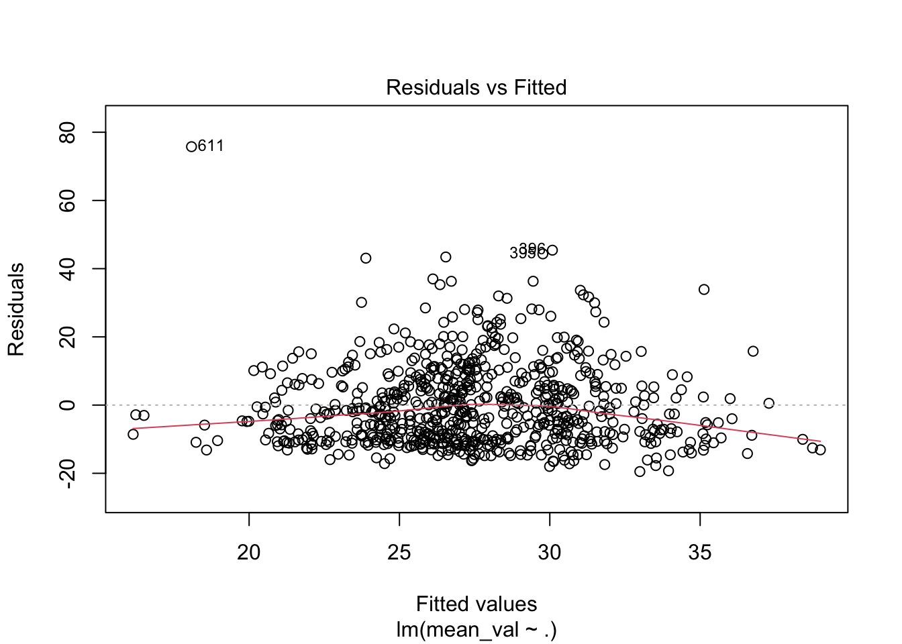
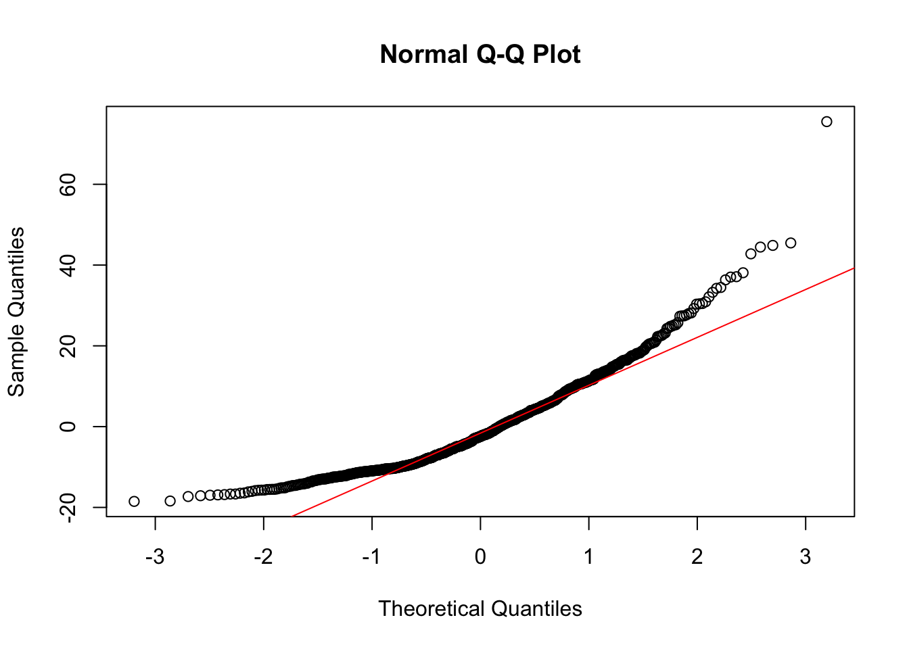
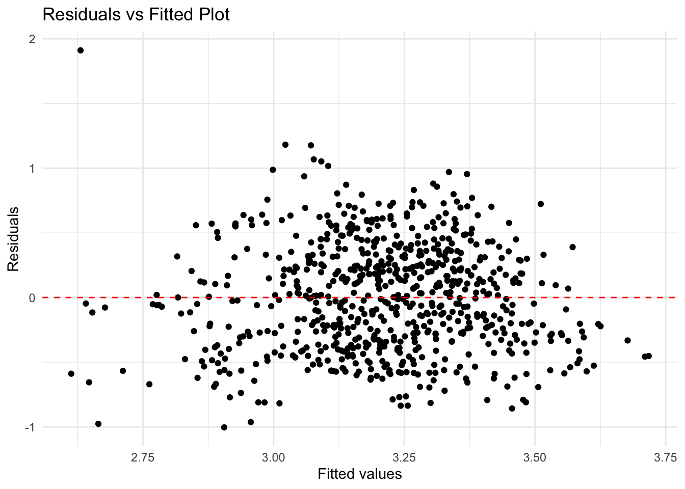
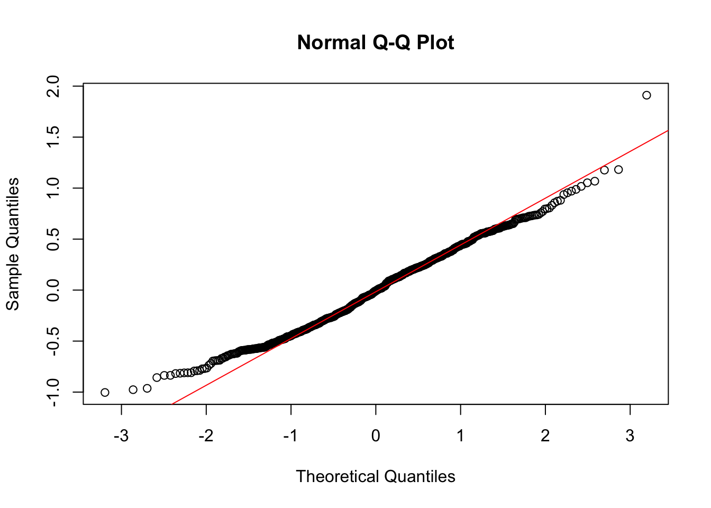

`summarise()` has grouped output by 'year_id', 'location_name'. You can
override using the `.groups` argument.

As shown in the data page, we find out the unexpected positive growth of the maternal mortality rate over the States. In effort to figure out the possible reasons that has statistical significance causing this increasing trend, our group seek to explore if the annual spending on healthcare and the average age of pregnancy could contribute to the phenomenon.
Our team focus on the following variables:
We collected and cleaned the average spending of healthcare data and the average pregnancy age data. During the analyzing process, we notice a clear increasing trend in both the line plot of spending vs mmr and avaergae age vs mmr. Thus, we predict that a linear regression may provide a fit model for the deduction.
`summarise()` has grouped output by 'year_id', 'location_name'. You can
override using the `.groups` argument.
Figure 3: The five graphs depict the trajectory of maternal mortality rates over a 20-year period, differentiated by racial categories and geographic regions in the United States. These categories include Hispanic and any race, Non-Hispanic American Indian and Alaska Native, Non-Hispanic Asian and Native Hawaiian or Other Pacific Islander, Non-Hispanic Black, and Non-Hispanic White. While there is an overarching increase in mortality rates across these racial demographics, the patterns of increase vary notably between them.
For the categories of Hispanic and any race, Non-Hispanic Asian and Native Hawaiian or Other Pacific Islander, and Non-Hispanic White, the mortality rates appear to be relatively stable, with slight fluctuations over the two decades. The lines on the graph for these groups are relatively flat, suggesting less volatility in their yearly rates and possibly better outcomes when compared to the other categories.
Contrastingly, the Non-Hispanic Black category exhibits a pronounced upward trend in the Northeast and South regions, indicating a concerning rise in maternal mortality rates that surpasses the other racial groups in these areas. This suggests that Non-Hispanic Black women in these regions are disproportionately affected by factors contributing to maternal mortality.
The Non-Hispanic American Indian and Alaska Native category demonstrates a significant increase in maternal mortality rates, particularly in the Midwest and West regions. The sharp rise could be indicative of systemic health disparities or regional deficiencies in healthcare access or quality that particularly impact this demographic.
The observed regional differences, such as higher rates in the South and variations in the Midwest and West, might be influenced by a multitude of factors including healthcare infrastructure, socioeconomic status, accessibility of prenatal and postnatal care, and population density. Regions with higher population densities might face different healthcare challenges than less densely populated areas, potentially affecting the availability and quality of care.

`geom_smooth()` using formula = 'y ~ x'
| Term | Estimate | Standard Error | t-Statistic | p-Value |
|---|---|---|---|---|
| (Intercept) | -0.2915658 | 0.1060926 | -2.748219 | 0.0061437 |
| AverageAge | 0.0215854 | 0.0040425 | 5.339643 | 0.0000001 |
Coefficient for AverageAge: The coefficient estimate for AverageAge is 0.0216. This indicates that for each additional year increase in the average age, the mean_val variable increases by approximately 0.0216 units on average, assuming a linear relationship.
Statistical Significance: The p-value for AverageAge is extremely low (0.0000001), indicating strong statistical significance. This suggests that there is a very low probability that the observed association is due to random chance, implying that AverageAge is a significant predictor of mean_val.
| Metric | Value |
|---|---|
| R-squared | 0.0385028 |
| Adjusted R-squared | 0.0371524 |
| Sigma | 0.1225132 |
| F-statistic | 28.5117877 |
| p-value | 0.0000001 |
| Degrees of Freedom | 1.0000000 |
Model Fit (R-squared and Adjusted R-squared): The R-squared value of 0.0385 indicates that approximately 3.85% of the variability in the dependent variable is explained by the model. The adjusted R-squared value of 0.0372 provides a more accurate measure by adjusting for the number of predictors, which is still low, indicating the model does not capture much of the variability.
Model Accuracy (Sigma): The sigma value of 0.1225, representing the standard deviation of the residuals, suggests that predictions on average deviate from the actual values by 0.1225 units. This provides insight into the accuracy of the model’s predictions.
Model Significance (F-statistic and p-value): The F-statistic of 28.51 and the p-value of 0.0000001 indicate that the model is statistically significant, meaning that the relationship between the dependent and independent variables is unlikely due to chance. However, despite statistical significance, the low R-squared indicates that other factors might influence the dependent variable not captured by this model.
To accurately understand maternal mortality rates (MMR) in relation to age, it’s essential to consider other influential factors such as healthcare spending and regional differences. Multiple linear regression allows us to assess the combined impact of these factors, providing a more nuanced analysis of how each variable influences MMR while controlling for others.
| year | spending | mean_val | AverageAge | RegionMidwest | RegionNortheast | RegionSouth | RegionWest | |
|---|---|---|---|---|---|---|---|---|
| year | 1.0000000 | 0.8550099 | 0.5733729 | 0.6375395 | 0.0000000 | 0.0000000 | 0.0000000 | 0.0000000 |
| spending | 0.8550099 | 1.0000000 | 0.3757901 | 0.6721931 | 0.0099172 | 0.2648214 | -0.0468564 | -0.1906206 |
| mean_val | 0.5733729 | 0.3757901 | 1.0000000 | 0.1962213 | -0.0083461 | -0.0849174 | 0.0234427 | 0.0570471 |
| AverageAge | 0.6375395 | 0.6721931 | 0.1962213 | 1.0000000 | 0.0962390 | 0.3896595 | -0.3807046 | -0.0227236 |
| RegionMidwest | 0.0000000 | 0.0099172 | -0.0083461 | 0.0962390 | 1.0000000 | -0.2567763 | -0.3922323 | -0.3244428 |
| RegionNortheast | 0.0000000 | 0.2648214 | -0.0849174 | 0.3896595 | -0.2567763 | 1.0000000 | -0.3273268 | -0.2707550 |
| RegionSouth | 0.0000000 | -0.0468564 | 0.0234427 | -0.3807046 | -0.3922323 | -0.3273268 | 1.0000000 | -0.4135851 |
| RegionWest | 0.0000000 | -0.1906206 | 0.0570471 | -0.0227236 | -0.3244428 | -0.2707550 | -0.4135851 | 1.0000000 |
· The correlation matrix shows a strong positive correlation between year and healthcare spending (0.855), suggesting that healthcare spending has generally increased over time. It also highlights a moderate positive correlation between mean_val (possibly MMR) and year (0.573), implying that the target variable might have increased over time, though other factors are also influencing it.
· The regional dummy variables have low or negative correlations with most other variables, indicating that regional effects might be distinct and not directly correlated with the continuous variables in the matrix.
| Estimate | Std. Error | t value | Pr(>|t|) | |
|---|---|---|---|---|
| (Intercept) | -39.7275832 | 14.2639471 | -2.7851746 | 0.0054929 |
| AverageAge | 2.3156328 | 0.6034342 | 3.8374240 | 0.0001354 |
| spending | 0.0009328 | 0.0003813 | 2.4463432 | 0.0146736 |
| RegionNortheast | -6.3462137 | 1.4607040 | -4.3446268 | 0.0000160 |
| RegionSouth | 1.6394831 | 1.2851124 | 1.2757507 | 0.2024621 |
| RegionWest | 0.9127836 | 1.2994790 | 0.7024228 | 0.4826464 |
Effect of Predictors: - AverageAge: With a coefficient of 2.32 (p < 0.001), a unit increase in average age is associated with an estimated increase of 2.32 units in MMR, holding other factors constant. This implies that as the average age of mothers increases, MMR tends to increase. - Spending: The spending coefficient is 0.00093 (p = 0.015), indicating that each unit increase in healthcare spending is associated with a slight increase in MMR, but the effect is very small. It is generally expected that increasing healthcare spending would reduce maternal mortality rates (MMR). However, since maternal mortality can also be linked to chronic diseases, increased healthcare expenditure does not always directly translate to improved outcomes. Additionally, as individuals are having children later in life compared to previous generations, the probability of maternal mortality may increase, which could contribute to higher healthcare costs without necessarily improving MMR. - Regions: - Northeast: This region has a significant negative coefficient of -6.35 (p < 0.001), suggesting that, compared to the baseline region, the Northeast is associated with a decrease in MMR. - South: The coefficient for the South is positive (1.64) but not statistically significant (p = 0.202). - West: The coefficient for the West is 0.91, also not statistically significant (p = 0.483).
| r.squared | adj.r.squared | sigma | statistic | p.value | df | logLik | AIC | BIC | deviance | df.residual | nobs | |
|---|---|---|---|---|---|---|---|---|---|---|---|---|
| value | 0.0866594 | 0.0802093 | 11.97426 | 13.43527 | 0 | 6 | -2782.799 | 5579.599 | 5611.595 | 101515 | 708 | 714 |
Model Fit (R-squared and Adjusted R-squared): The R-squared value of 0.087 suggests that the model explains approximately 8.7% of the variability in maternal mortality rates (MMR). The adjusted R-squared, at 0.080, adjusts for the number of predictors in the model and shows a similar low explanatory power. This indicates that the predictors included in the model (such as AverageAge, spending, and region) explain only a small portion of the variation in MMR.
Model Significance (F-statistic and p-value): The F-statistic of 13.44 and the associated p-value of 0 show that the overall model is statistically significant, meaning that the relationship between the predictors and the dependent variable (MMR) is unlikely to have occurred by chance. Despite the statistical significance, the low R-squared values indicate that there are likely other important factors not captured in this model that influence MMR.
Model Diagnostics (Sigma and Log-Likelihood): The sigma (residual standard error) of 11.97 reflects the average deviation of the observed MMR values from the predicted values, indicating the model’s predictive accuracy. The log-likelihood of -2782.799 provides a measure of the model’s fit, with higher values indicating a better fit. The AIC (5579.599) and BIC (5611.595) values also offer measures of the model’s goodness-of-fit, helping to compare it with other models.
Residual Plot

The residual plot indicates that the multiple linear regression model generally fits the data well, as evidenced by the mostly random scatter of residuals around zero. However, the presence of slight curvature suggests potential non-linearity in the relationship, and the mild fan shape of the residuals suggests possible heteroscedasticity, meaning that the variability in MMR may increase with higher fitted values. The presence of outliers also suggests that further investigation is needed to ensure these points do not disproportionately influence the model’s results.
QQ-Plot

The normal Q-Q plot shows that the residuals of the model generally follow a normal distribution, as most data points align with the diagonal reference line. However, there are notable deviations at the tails, particularly at the upper end, indicating the presence of significant outliers and suggesting that the residuals are not perfectly normal. This lack of normality at the extremes suggests that certain extreme data points might be influencing the model, potentially affecting its assumptions and necessitating further investigation or alternative modeling approaches.
The multiple linear regression analysis and diagnostic plots suggest potential issues with outliers and deviations from normality in the data. The residuals show some non-linearity and heteroscedasticity, indicating that the standard linear model might not be fully capturing the relationships among maternal mortality rates (MMR), age, spending, and regional effects. By applying a log-log regression model, we can linearize the relationships among variables, handle skewed data more effectively, and interpret coefficients as elasticities, which measure the percentage change in MMR in response to a 1% change in predictors. This approach can improve the model’s fit, stabilize variance, and provide more meaningful insights into the proportional changes affecting maternal mortality.
| Estimate | Std. Error | t value | Pr(>|t|) | |
|---|---|---|---|---|
| (Intercept) | -7.0327490 | 1.5617543 | -4.5031085 | 0.0000078 |
| log_AverageAge | 1.7399064 | 0.6121824 | 2.8421372 | 0.0046102 |
| log_spending | 0.5150077 | 0.0948862 | 5.4276323 | 0.0000001 |
| RegionNortheast | -0.3452760 | 0.0509757 | -6.7733414 | 0.0000000 |
| RegionSouth | 0.0424023 | 0.0455753 | 0.9303802 | 0.3524914 |
| RegionWest | 0.0475041 | 0.0455662 | 1.0425303 | 0.2975217 |
# Load necessary libraries
library(readr)
library(knitr)
# Load the dataset
data <- read_csv("dataset/phc_mmr_with_age.csv", show_col_types = FALSE)
# Remove rows with missing or invalid values in critical columns
data <- data[data$AverageAge > 0 & data$spending > 0 & data$mean_val > 0 & !is.na(data$Region), ]
# Convert AverageAge to numeric for log transformation
data$AverageAge <- as.numeric(data$AverageAge)Warning: NAs introduced by coercion# Apply log transformation to the variables
data$log_AverageAge <- log(data$AverageAge)
data$log_spending <- log(data$spending)
data$log_mean_val <- log(data$mean_val)
# Convert Region to a factor
data$Region <- factor(data$Region)
# Generate dummy variables for Region, excluding the first level to avoid singularities
region_dummies <- model.matrix(~ Region, data)[, -1]
# Combine the log-transformed data with the dummy variables
log_mlr_data <- cbind(data[, c("log_AverageAge", "log_spending", "log_mean_val")], region_dummies)
# Fit the log-log regression model
log_mlr_model <- lm(log_mean_val ~ ., data = log_mlr_data)
# Extract model summary statistics
log_summary_model <- summary(log_mlr_model)
model_stats <- data.frame(
R_squared = log_summary_model$r.squared,
Adj_R_squared = log_summary_model$adj.r.squared,
Sigma = log_summary_model$sigma,
Statistic = log_summary_model$fstatistic[1],
P_value = pf(log_summary_model$fstatistic[1], log_summary_model$fstatistic[2], log_summary_model$fstatistic[3], lower.tail = FALSE),
DF = log_summary_model$df[1],
LogLik = as.numeric(logLik(log_mlr_model)),
AIC = AIC(log_mlr_model),
BIC = BIC(log_mlr_model),
Deviance = deviance(log_mlr_model),
DF_Residual = df.residual(log_mlr_model),
Nobs = nobs(log_mlr_model)
)
# Display the model statistics in a Kable table
kable(model_stats, caption = "Log-Log Multiple Linear Regression Model Statistics")| R_squared | Adj_R_squared | Sigma | Statistic | P_value | DF | LogLik | AIC | BIC | Deviance | DF_Residual | Nobs | |
|---|---|---|---|---|---|---|---|---|---|---|---|---|
| value | 0.1597701 | 0.1538363 | 0.4186879 | 26.92531 | 0 | 6 | -388.48 | 790.9599 | 822.9561 | 124.1121 | 708 | 714 |
Model Fit (R-squared and Adjusted R-squared): The R-squared value of 0.16 indicates that the model explains approximately 16% of the variability in maternal mortality rates (MMR). The adjusted R-squared value of 0.15, which adjusts for the number of predictors in the model, suggests a slightly reduced explanatory power. This implies that while the model includes some significant predictors, a substantial portion of the variability in MMR remains unexplained, likely due to other factors not included in the model.
Model Significance (F-statistic and p-value): The F-statistic of 26.93 and its p-value of zero show that the overall model is statistically significant, meaning that the combined predictors significantly contribute to explaining variations in MMR. However, the relatively low R-squared values still suggest that there are additional important factors influencing MMR that are not captured by this model.
Model Diagnostics (Sigma, Log-Likelihood, AIC, and BIC): The sigma (residual standard error) of 0.42 reflects the average deviation of observed log-transformed MMR values from predicted values. The log-likelihood of -388.48 indicates the model’s goodness-of-fit, with higher values implying a better fit. The AIC (790.96) and BIC (822.96) values provide comparative measures of fit, penalizing for model complexity. The deviance (124.11) and residual degrees of freedom (708) give additional insight into the model’s residuals and flexibility, while the number of observations (714) reflects the sample size.

The residuals vs. fitted plot of the log-log regression model shows a more random and consistent distribution of residuals compared to the previous model, indicating a better fit to the data. The spread of residuals is more uniform, suggesting that the log-log model effectively addresses non-linearity and reduces heteroscedasticity, making the variance of residuals more constant. Additionally, there are fewer extreme outliers, which means that the log-log transformation mitigates the influence of extreme data points and provides a more accurate representation of the relationship between maternal mortality rates, age, spending, and regional factors. Despite this improvement, further refinement could enhance the model’s overall fit and predictive accuracy.
# QQ plot
qqnorm(resid(log_mlr_model))
qqline(resid(log_mlr_model), col = "red")
The current normal Q-Q plot shows that the residuals from the log-log regression model generally follow a normal distribution, with most points aligning closely to the diagonal reference line. However, there are slight deviations at the extremes, which are indicative of some outliers affecting the tails. Compared to the previous Q-Q plot, which exhibited more extreme deviations from normality at the upper end, the log-log model demonstrates improved normality of residuals, suggesting that the log transformation helps to mitigate the influence of outliers and enhances the overall fit. Nonetheless, the presence of outliers in both models indicates potential factors influencing the data that are not fully captured in either model.